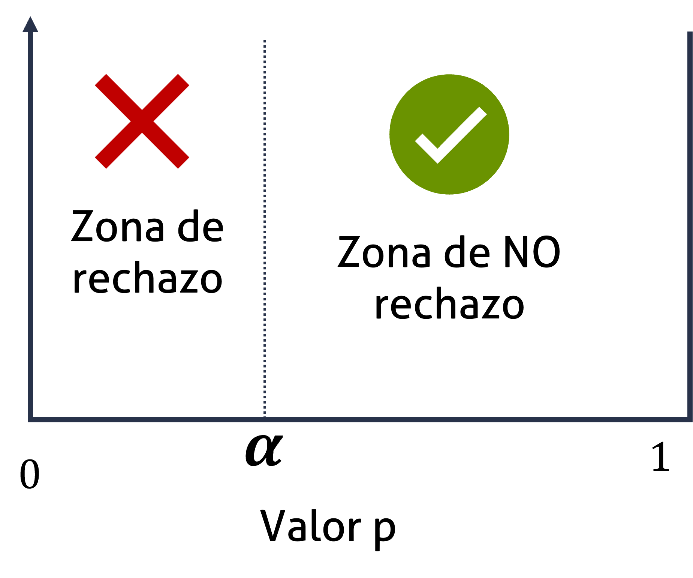
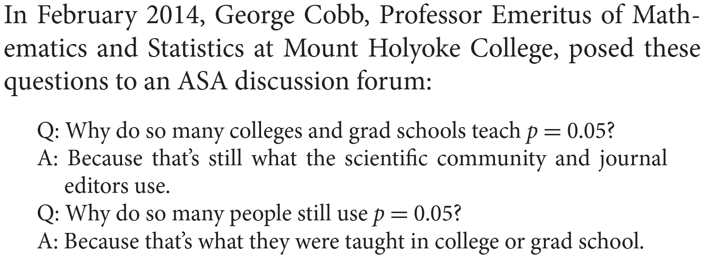
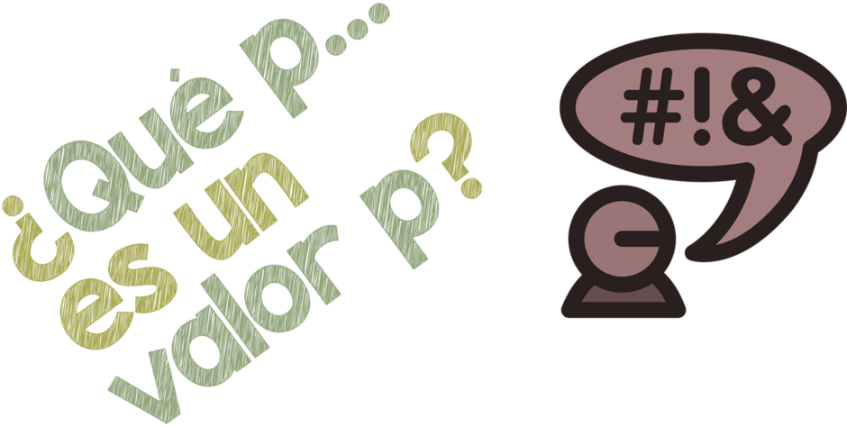
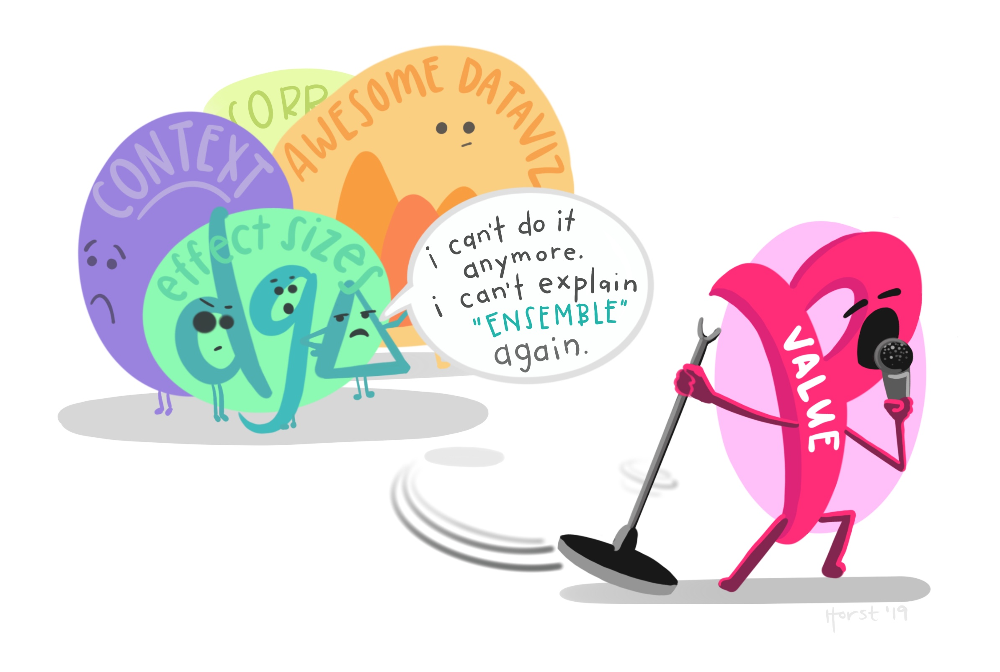
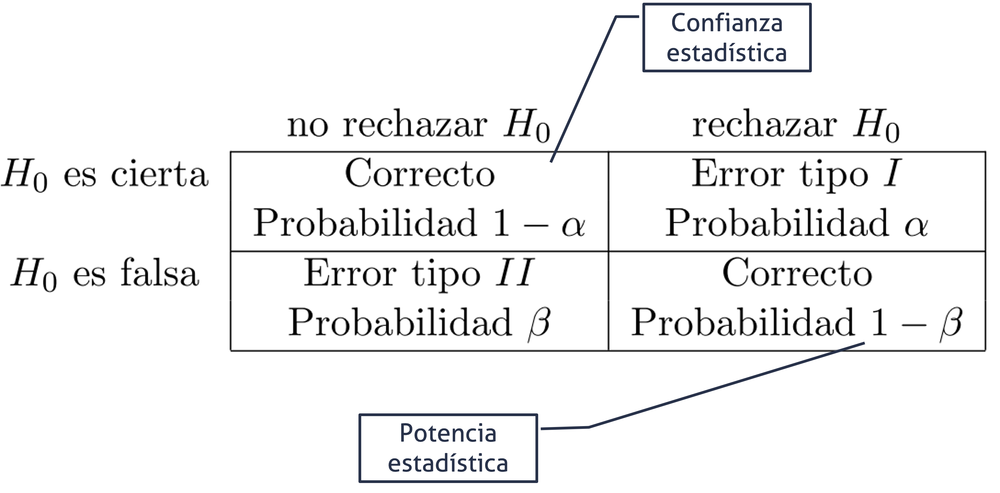
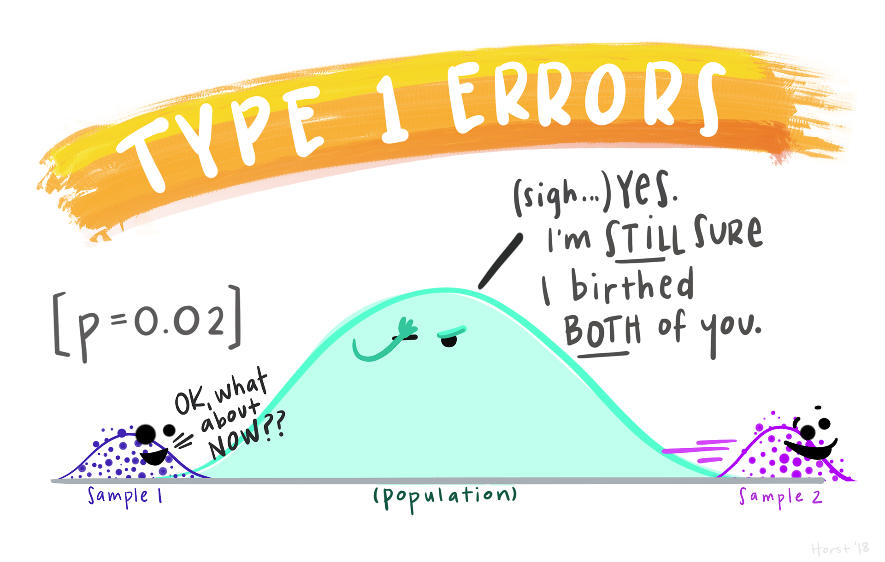
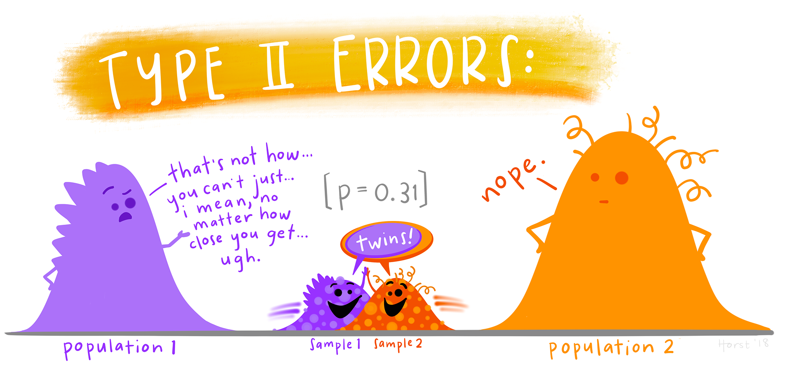
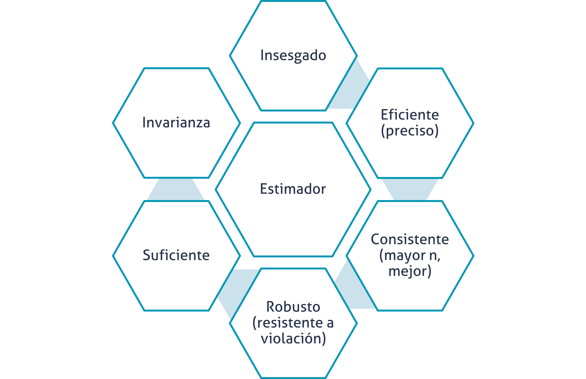
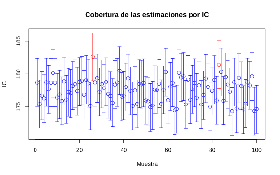
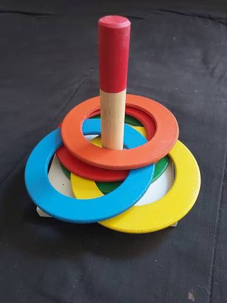

Pruebas de hipótesis e Intervalos de confianza
Versión PDF
II-1123 Estadística para Ingeniería Industrial II
steven.garciagoni@ucr.ac.cr
21 de agosto de 2026
Agenda
- Preguntas generadoras
- Conceptos iniciales
- Estimación puntual
- Tamaño de muestra
- Para intervalos
- Para pruebas de hipótesis
- Intervalos de confianza y pruebas de hipótesis
- Una muestra
- Dos muestras
Preguntas generadoras
- ¿Por qué no se deben analizar estimadores puntuales?
- ¿Cómo se selecciona un nivel de confianza?
- ¿Qué es un intervalo de confianza y cuáles parámetros le afectan?
- ¿Qué es error Tipo I, Tipo II, nivel de significancia y valores P?
- ¿Cómo se calculan los tamaños de muestra necesarios? ¿Qué es un efecto y qué es potencia?
- ¿Qué es una hipótesis?
- ¿Qué es una prueba de hipótesis?
- ¿Cómo se prueba una hipótesis?
Conceptos iniciales
Para conversar tod@s en el mismo idioma
Idioma común
Comencemos por la simbología:
\alpha: También conocida como nivel de significancia, está asociada con el error tipo I.
1-\alpha: Es el nivel de confianza, es el complemento del nivel de significancia.
\beta: Es el error tipo II.
1-\beta: Es el complemento del error tipo II y se conoce como la potencia estadística.
Idioma común
Contraste (prueba) de hipótesis:
- Es una pretensión o aseveración, que se asume como inicialmente cierta, sobre: el valor verdadero de un parámetro, los valores de varios parámetros o la forma de la distribución de probabilidad completa.
Está compuesta por:
H_o: Hipótesis nula, que se supone como incialmente cierta.
H_i: Hipótesis alternativa, que es una aseveración contraria.
Idioma común
Contraste (prueba) de hipótesis:
Si no se contradice fuertemente la hipótesis nula, se continuará creyendo que esta es verdad.
Las dos conclusiones posibles derivadas de este análisis siempre son rechazar o no rechazar.
- Nunca, bajo ningún concepto es aceptar y esta no es una cuestión semántica es de la construcción de la prueba.
Idioma común
Valor P
Es una probabilidad que mide la evidencia en contra de la hipótesis nula. Aunque parezca contraintuitivo, entre más bajo, más fuerte será la evidencia en contra.
Este valor se compara contra el nivel de significancia (\alpha).

Idioma común
Valor P
- De forma un poco más formal, un valor P es la probabilidad bajo un modelo estadístico especificado que un resumen estadístico de los datos sería igual o más extremo que su valor observado

Idioma común
Valor P
Usualmente el valor P se interpreta mal, sobre todo por algunos malentendidos históricos.
En este enlace encontrará una infografía con cuidados e interpretaciones que debemos tener con el valor P, así como 6 principios fundamentales. Este materia NO es opcional, por lo que se le solicita que recurra a su estudio de forma individual y autónoma.

Idioma común
El valor P no es el protagonista, es solo una medida estadística adicional, que se interpreta en conjunto con las demás medidas.
Ilustración de Allison Horst

Idioma común
Error Tipo I
Asociado con el nivel de significancia \alpha.
Es el error que se comete cuando el investigador rechaza la hipótesis nula cuando esta es verdadera en la población.
Error Tipo II
Es el error que se comete cuando el investigador NO rechaza la hipótesis nula, cuando esta es falsa en la población.
Idioma común

Idioma común
Idioma común

Idioma común

Estimación puntual
Introducción y repaso
La inferencia estadística está siempre enfocada en obtener conclusiones acerca de uno o más parámetros de una población.
Una parte importante de este proceso es obtener estimadores acerca de los parámetros.
El objetivo de la estimación puntual es utilizar una muestra para calcular un número que representa en cierto sentido una buena suposición del valor verdadero del parámetro.
Estimación

Estimación puntual
- La estimación puntual se puede obtener mediante, al menos, dos métodos, ninguno se abarca a detalle en este curso, se menciona como parte de su formación, no para evaluación, pero el primero es el que hemos estado usando en este curso:
- Método de momentos
- Método de máxima verosimilitud
- Método de estimación bayesiana
Estimación puntual
En técnicas estadísticas más avanzadas, se suelen usar con mucha más frecuencia el método de máxima verosimilitud (ML), por ejemplo, para estimar regresiones, modelos lineales generalizados, etc.
Cuando hay “problemas” en la estimación por ML (como que una varianza de negativa, lo cual es imposible, pero puede pasar en modelos complejos) se puede usar la estimación bayesiana.
Estimación puntual
Formalmente:
- Una estimación puntual de un parámetros \theta de alguna población es un único valor numérico \hat{\theta} de un estadístico \hat{\Theta}.
- El estadístico \hat{\Theta} es llamado estimador puntual.
Por ejemplo:
- El valor de \bar{x} del estadístico \bar{X}, que se calcula a partir de una muestra de tamaño n, es una estimación puntual del parámetro de la población \mu.
Los estimadores deben…
Esto es para mención, el detalle necesita demostraciones matemáticas

Estimadores insesgados
Un estimador puntual \hat{\Theta} es una estimación insesgada del parámetros \theta si E(\hat{\theta}) = \theta.
Recuerde que sesgo es la diferencia que hay entre \theta y \hat{\theta}.
Estimadores insesgados
¿Recuerda la corrección que se hace en el cálculo de la varianza muestra? También conocida como corrección de Bessel.
Para estimar la varianza de una población usamos:
s^2 = \frac{\sum_{i=1}^{n}(x_i-\bar{x})^2}{n-1}
En lugar de:
s^2 = \frac{\sum_{i=1}^{n}(x_i-\bar{x})^2}{n}
El primero es un estimador INSESGADO de la varianza poblacional. Mientras que el segundo NO LO ES. Esto se sabe por demostraciones con el método de momentos, por ejemplo.
Estimación por intervalos
Estimación por intervalos
Una estimación puntual, por el hecho de ser un solo número no proporciona información sobre la precisión y confiabilidad de la estimación.
Debido a las variabilidades del muestreo, virtualmente nunca se dará el caso de \theta = \hat{\theta}.
Una alternativa para mitigar este riesgo es utilizar intervalos de confianza.
Un intervalo de confianza siempre se calcula seleccionando primero un nivel de confianza.
Por ejemplo, un intervalo de confianza al 95 % implica que 95 % de todas las muestras dará un intervalo que contiene a \theta.
Estimación por intervalos
Mientras mayor es el nivel de confianza, más fuerte es la creencia de que el valor del parámetro que se está estimando queda dentro del intervalo.
Si el nivel de confianza es alto y el intervalo resultante es bastante angosto, el conocimiento del valor del parámetro es bastante preciso.
Un amplio intervalo de confianza transmite el mensaje de que existe gran cantidad de incertidumbre sobre el valor que se está estimando.
Estimación por intervalos
Estimación por intervalos
Del TLC recordamos que:
La variabilidad se expresa como \frac{s}{\sqrt{n}}, y a esto lo vamos a llamar Error Estándar, este es un estimador de la precisión.
Además, z = \frac{x-\mu}{\frac{\sigma}{\sqrt{n}}}
Estimación por intervalos
P \left( -z_{\frac{\alpha}{2}} < \frac{\bar{x} - \mu}{\frac{\sigma}{\sqrt{n}}} < z_{\frac{\alpha}{2}} \right) = 1 - \alpha
\Rightarrow -z_{\frac{\alpha}{2}} \cdot \frac{\sigma}{\sqrt{n}} < \bar{x} - \mu < z_{\frac{\alpha}{2}} \cdot \frac{\sigma}{\sqrt{n}}
\Rightarrow -\bar{x} - z_{\frac{\alpha}{2}} \cdot \frac{\sigma}{\sqrt{n}} < -\mu < -\bar{x} + z_{\frac{\alpha}{2}} \cdot \frac{\sigma}{\sqrt{n}}
\Rightarrow \bar{x} - z_{\frac{\alpha}{2}} \cdot \frac{\sigma}{\sqrt{n}} < \mu < \bar{x} + z_{\frac{\alpha}{2}} \cdot \frac{\sigma}{\sqrt{n}}
¿Cómo se interpreta?
La interpretación es simple, pero no hay que confundirla con otros intervalos:
- El intervalo observado contiene el valor verdadero del parámetro, por ejemplo \mu, con una confianza de 1-\alpha.
NO ES CORRECTO decir que:
- El parámetro verdadero, por ejemplo \mu se encuentra dentro del intervalo con un 1-\alpha de probabilidad.
Reflexione:
- En este enfoque, se trata al parámetro como una variable aleatoria.
- En el enfoque correcto, la variable aleatoria son los intervalos generados.
¿Cómo se interpreta?
¿Es lógico no? Es natural pensar que el valor verdadero es siempre FIJO, lo que cambia es la estimación de los intervalos porque dependen de una muestra.
Así se muestra en la imagen adjunta (y en la aplicación anterior), lo que cambia es el intervalo, no el parámetro.

¿Cómo se interpreta?
Es lo mismo que jugar “reverse basketball”, la bola está fija (parámetro), lo que cambia es el aro (Intervalo).
Que aunque sea del mismo tamaño, varía la “precisión” (EE) del lanzador.
Ver video
¿Cómo se interpreta?
Una analogía menos peligrosa, para intentar en casa, es este juego para niños.
Las barras fijas, representan el parámetro y los aros representan los intervalos de confianza.

Pruebas de hipótesis
Pruebas de hipótesis
Muchos problemas en ingeniería requieren que se decida sobre cual de dos afirmaciones sobre un parámetro es verdades. Estas afirmaciones se denominan hipótesis y el proceso para la toma de decisiones se conoce como prueba de hipótesis.
Una hipótesis estadística es una declaración sobre los parámetros de una o más poblaciones.
Pruebas de hipótesis
Esta declaración se asume como inicialmente cierta. Y se busca evidencia en contra de dicha afirmación.
Es por eso que el resultado de la prueba de hipótesis es:
- Tengo o no tengo evidencia suficiente en contra de dicha afirmación. Por tanto se rechaza o no se rechaza.
- Nunca se acepta.
Pruebas de hipótesis e Intervalos de confianza
Aunque son dos temas diferentes, se van a abordar de manera simultánea. Pues, en este contexto se necesita de un intervalo de confianza para dar respuesta a la prueba de hipótesis.
Dicho de otra forma, puede haber intervalo de confianza sin prueba de hipótesis, pero no prueba de hipótesis sin intervalo de confianza.
Por ello, es que se esta clase se aborda desde la prueba de hipótesis, ya que simultáneamente se obtendrá un intervalo de confianza.
En este contexto (en este marco del curso se enseñará la dualidad entre ambos, no es un requisito universal):
- Toda prueba de hipótesis, involucra un intervalo de confianza.
- Los intervalos de confianza no requieren prueba de hipótesis.
Pruebas de hipótesis e IC para la media
Supuestos
La(s) población(es) de las que se extraen las muestras siguen la distribución normal.
No se sigue la normal, pero el tamaño de muestra es lo suficientemente grande para cumplir con el teorema de límite central (TLC)
Recuerde que “grande” es relativo a la asimetría de la población, y que en caso de desconocerse o tener idea alguna, el valor de n \ge 30 puede resultar en una aproximación válida.
También recuerde la ley de los grandes números, a mayor muestra, mejor.
Una media (Varianza conocida)
- Se emplea el estadístico z
z = \frac{x-\mu}{\frac{\sigma}{\sqrt{n}}}
- El intervalor bilateral está compuesto por:
\bar{x} \pm z_{\alpha/2} \cdot \frac{\sigma}{\sqrt{n}}
- Los intervalos unilaterales están compuestos por:
Para la cola izquierda
\bar{x} - z_{\alpha} \cdot \frac{\sigma}{\sqrt{n}}
Para la cola derecha
\bar{x} + z_{\alpha} \cdot \frac{\sigma}{\sqrt{n}}
Este escenario es irreal, porque típicamente AMBOS parámetros (\mu y \sigma) son desconocidos.
Por lo que su aplicabilidad es sumamente limitada; sobre todo cuando de un proceso previo se asume que continuará con la misma \sigma.